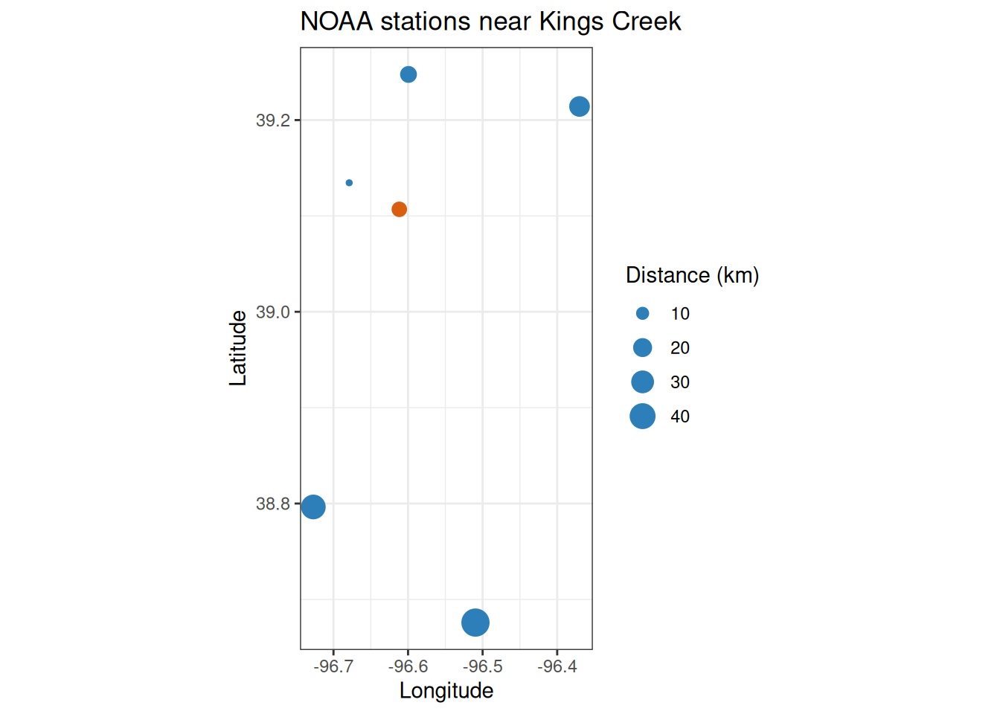

Introduction
Meteorological inputs—temperature, precipitation, and barometric pressure—are essential for computing dissolved oxygen saturation and gas exchange in stream metabolism models. This vignette shows how to find NOAA daily-summary stations near Kings Creek at Konza Prairie Biological Station, Kansas, and download the weather data needed to accompany the built-in kings_discharge dataset (water year 2025: 2024-10-01 through 2025-09-30).
preMetabolizer provides three helpers for station discovery:
-
get_noaa_stations()searches for GHCND stations via the NCEI Search Service API. -
closest_noaa_stations()finds stations within a distance of a target coordinate and ranks them by geodesic distance. -
ncei_stations()is the lower-level function underlying both helpers; it can search any NCEI dataset.
Note: All functions in this vignette contact the NCEI API. Code chunks will not run during package installation if NCEI is unreachable.
Study site
Kings Creek drains the Konza Prairie Biological Station near Manhattan, Kansas (39.1069°N, 96.6117°W). The USGS monitoring location USGS-06879650 records daily discharge, gage height, and water temperature throughout water year 2025.
lat_kings <- 39.1068806
lon_kings <- -96.6117151
wy_start <- "2024-10-01"
wy_end <- "2025-09-30"Search for stations
Use ncei_bbox() to build a bounding box from a center point and radius, then pass it to get_noaa_stations():
bbox <- ncei_bbox(latitude = lat_kings, longitude = lon_kings, dist_km = 100)
bbox
#> north west south east
#> 40.00778 -97.77271 38.20598 -95.45072
ks_stations <- get_noaa_stations(bbox = bbox)
glimpse(ks_stations)
#> Rows: 634
#> Columns: 6
#> $ station_id <chr> "USW00013996", "USW00013984", "USW00003919", "USW00003936…
#> $ station_name <chr> "TOPEKA ASOS, KS US", "CONCORDIA ASOS, KS US", "SALINA MU…
#> $ latitude <dbl> 39.07246, 39.55127, 38.77996, 39.13456, 38.32906, 38.9414…
#> $ longitude <dbl> -95.62602, -97.65077, -97.64444, -96.67894, -96.19453, -9…
#> $ start_date <date> 1946-08-01, 1885-05-01, 1952-01-01, 1960-06-01, 1950-10-…
#> $ end_date <date> 2026-06-05, 2026-06-05, 2026-06-04, 2026-06-05, 2026-06-…Filter to stations that carry the variables you need and span at least part of water year 2025:
wx_stations <- get_noaa_stations(
bbox = bbox,
data_types = c("TMAX", "TMIN", "PRCP"),
start_date = wy_start,
end_date = wy_end
)
wx_stations |>
select(station_id, station_name, latitude, longitude, start_date, end_date) |>
arrange(station_name)
#> # A tibble: 47 × 6
#> station_id station_name latitude longitude start_date end_date
#> <chr> <chr> <dbl> <dbl> <date> <date>
#> 1 USC00140010 ABILENE, KS US 38.9 -97.2 1893-01-01 2026-04-30
#> 2 USC00140682 BELLEVILLE, KS US 39.8 -97.6 1935-04-01 2026-06-05
#> 3 USC00140877 BLAINE, KS US 39.5 -96.4 1955-03-02 2026-04-15
#> 4 USC00140911 BLUE RAPIDS, KS US 39.7 -96.7 1905-01-01 2026-06-05
#> 5 USC00141435 CHAPMAN, KS US 39.0 -97.0 1904-02-01 2026-06-06
#> 6 USC00141559 CLAY CENTER, KS US 39.4 -97.1 1902-04-16 2026-06-06
#> 7 USC00141593 CLIFTON, KS US 39.6 -97.3 1931-04-01 2026-06-05
#> 8 USC00141761 CONCORDIA 2 SE, KS US 39.6 -97.6 2003-01-01 2026-06-04
#> 9 USC00141762 CONCORDIA 2 SSE, KS US 39.5 -97.7 2024-03-21 2026-06-06
#> 10 USW00013984 CONCORDIA ASOS, KS US 39.6 -97.7 1885-05-01 2026-06-05
#> # ℹ 37 more rowsFind nearby stations
closest_noaa_stations() builds the bounding box automatically and returns stations sorted by geodesic distance from the target point:
konza_noaa <- closest_noaa_stations(
latitude = lat_kings,
longitude = lon_kings,
dist_km = 50,
data_types = c("TMAX", "TMIN", "PRCP"),
start_date = wy_start,
end_date = wy_end
)
konza_noaa |>
select(distance_km, station_id, station_name, latitude, longitude)
#> # A tibble: 13 × 5
#> distance_km station_id station_name latitude longitude
#> <dbl> <chr> <chr> <dbl> <dbl>
#> 1 0.493 USW00053974 MANHATTAN 6 SSW, KS US 39.1 -96.6
#> 2 6.58 USW00003936 MANHATTAN ASOS, KS US 39.1 -96.7
#> 3 10.4 USC00144972 MANHATTAN, KS US 39.2 -96.6
#> 4 14.4 USC00142827 FORT RILEY, KS US 39.1 -96.8
#> 5 14.8 USW00013947 FORT RILEY MARSHALL ARMY AIR FIEL… 39.0 -96.8
#> 6 15.7 USC00148259 TUTTLE CREEK LAKE, KS US 39.2 -96.6
#> 7 24.0 USC00148563 WAMEGO 4 W, KS US 39.2 -96.4
#> 8 25.0 USC00145306 MILFORD LAKE, KS US 39.1 -96.9
#> 9 35.9 USC00148802 WHITE CITY, KS US 38.8 -96.7
#> 10 38.4 USC00141435 CHAPMAN, KS US 39.0 -97.0
#> 11 43.5 USC00148503 WAKEFIELD 4 W, KS US 39.2 -97.1
#> 12 47.1 USC00140877 BLAINE, KS US 39.5 -96.4
#> 13 48.7 USC00141867 COUNCIL GROVE LAKE, KS US 38.7 -96.5Map the candidates before choosing a station:
ggplot(konza_noaa, aes(longitude, latitude)) +
geom_point(aes(size = distance_km), color = "#2c7fb8") +
annotate("point", x = lon_kings, y = lat_kings, color = "#d95f0e", size = 3) +
coord_quickmap() +
labs(
x = "Longitude",
y = "Latitude",
size = "Distance (km)",
title = "NOAA stations near Kings Creek"
) +
theme_bw()
Download daily weather data
Pick the nearest station and download daily temperature and precipitation for water year 2025 with ncei_data():
daily_wx <- ncei_data(
dataset = "daily-summaries",
stations = station_id,
start_date = wy_start,
end_date = wy_end,
data_types = c("TMAX", "TMIN", "PRCP")
)
glimpse(daily_wx)
#> Rows: 365
#> Columns: 6
#> $ station_id <chr> "USW00053974", "USW00053974", "USW00053974", "USW00053974…
#> $ station_name <chr> "MANHATTAN 6 SSW, KS US", "MANHATTAN 6 SSW, KS US", "MANH…
#> $ date <date> 2024-10-01, 2024-10-02, 2024-10-03, 2024-10-04, 2024-10-…
#> $ prcp <dbl> 0.0, 0.0, 0.0, 0.0, 0.0, 0.0, 0.0, 0.0, 0.0, 3.7, 0.0, 0.…
#> $ tmax <dbl> 22.6, 28.4, 34.7, 28.3, 35.4, 26.2, 24.8, 26.5, 30.2, 29.…
#> $ tmin <dbl> 5.5, 3.8, 12.5, 13.2, 12.8, 6.4, 2.5, 8.8, 7.0, 12.9, 16.…With units = "metric" (the default), ncei_data() returns tmax and tmin in °C and prcp in mm. The date column is already a Date:
Barometric pressure and PAR
GHCND covers temperature and precipitation well, but barometric pressure records are sparse in this region. For pressure and photosynthetically active radiation (PAR), use get_nasa_data() to pull modeled values from NASA POWER, or get_ghcnh() to download observed hourly pressure from the GHCNh archive.
stream_data <- tibble(
dateTime = seq(
as.POSIXct(paste(wy_start, "00:00:00"), tz = "UTC"),
as.POSIXct(paste(wy_end, "23:00:00"), tz = "UTC"),
by = "1 hour"
)
)
nasa_wx <- get_nasa_data(
data = stream_data,
latitude = lat_kings,
longitude = lon_kings,
elev_m = 320
)
glimpse(nasa_wx)The PSC column contains elevation-corrected barometric pressure (kPa), light.obs contains PAR (µmol/m²/s), T2M air temperature (°C), and PRECTOTCORR precipitation (mm/hr).
Use station IDs with GHCNh data
The station_id values returned by closest_noaa_stations() also identify GHCNh files. Pass them directly to get_ghcnh():
station_id
#> [1] "USW00053974"See vignette("ghcnh", package = "preMetabolizer") for a full hourly-data workflow.